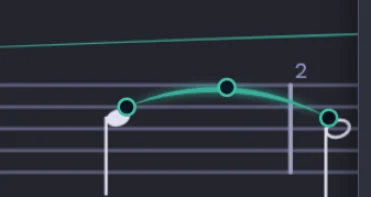
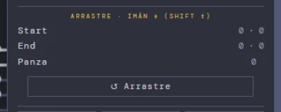
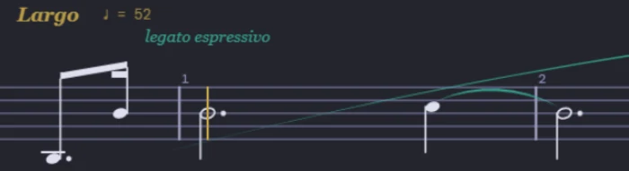
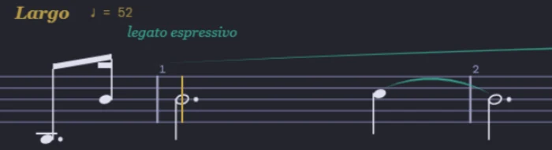

De partituur.
Je schrijft muziek per kanaal. Met het mini-keyboard in de TODAL-modus speel je op de toontrappen van de toonaard (in F groot klinkt trap IV automatisch als bes). Zelf maakt het geen klank — die komt van het Keyboard, live gesynchroniseerd.
Schrijven per kanaal
Je componeert per kanaal —tot 32—, elk met een eigen instrument. CH10 is vast voorbehouden aan slagwerk. Per kanaal kun je het geluid uitzetten (mute) en de partij tonen of verbergen, om je op één stem tegelijk te concentreren.
Het mini-keyboard (TODAL-modus)
De strook onderaan, in drie zones: links hoe je speelt, in het midden de toetsen, rechts het kanaal waarin je schrijft. WRITE schrijft op de cursor en LISTEN laat alleen horen, zonder aan de partituur te raken. De WRITE-knop wisselt af tussen ✏ WRITE → TODAL PLAY → TODAL WRITE: in TODAL dragen de toetsen het opschrift van hun trap in de actieve toonaard, en dezelfde trap geeft altijd de juiste noot — daarom kan iemand zonder muzikale opleiding correct schrijven in elke toonaard, en kan een musicus componeren zonder piano te kunnen spelen. Daaronder de stemming: System (zuiver pythagorese Axiom · Tonal met posities), Mode (groot, of klein: natuurlijk, harmonisch en melodisch) en Sens, hoeveel de leidtoon verhoogd wordt. En in de rechterzone de kaart van het actieve kanaal met zijn volume en het raster van de 32, om met één klik van kanaal te wisselen.
Het Panel: twee systemen in beeld
De knop ▭ PANEL opent een tweede weergave onder de partituur, om twee dingen tegelijk te volgen: de solist en de bas, de stem die je overschrijft en de stem die je schrijft. De CH chips in de kop kiezen welke kanalen het Panel weerspiegelt —elk in zijn eigen kleur—, en als je schrijft in een kanaal dat er nog niet bij was, voegt het Panel het zelf toe. Het heeft een eigen zoom (Ctrl + scrollwiel) en wordt groter als je aan zijn balk trekt. 🎧 SOLO vraagt de Console om die kanalen te isoleren en geeft de mengtafel terug zoals ze was wanneer je het uitzet; 🖨 PRINT VIEW opent ze in de afdrukweergave. En het is niet alleen om naar te kijken: de rechtsklik werkt er ook in, met dezelfde editors als op het grote blad. Het Panel en het klavier wisselen elkaar af: het ene openen verbergt het andere.
Automatische voortekening
Kies de grondtoon en de voortekening stelt zich vanzelf in. De spelling wordt diatonisch bepaald door de voortekening, met de trapaanduidingen in goud: je ziet de functie van elke noot, niet alleen haar naam.
Duurwaarden en rusten
Je bepaalt de duur van elke noot (van hele noot tot 64ste noot). Een tweede klik op dezelfde waarde maakt er een rust van, zodat je ritme en pauzes met hetzelfde gebaar schrijft. En met het numerieke toetsenblok kies je ze met één hand —van 1 (de kortste) tot 7 (de hele noot), het punt op de punttoets— volgens de gewoonte van notatieprogramma's.
De zwevende strook
De nootwaarden reizen met je mee: een zwevende strook met de duurwaarden, het punt, voorslagen en tuplets, die je meesleept naar waar je aan het schrijven bent. Trek ze uit tot een lijn of vouw ze op tot een blok — ze onthoudt waar je ze liet. Zo kun je componeren met het mini-keyboard gesloten, met de partituur over de volle pagina. Ze is ook een bewerkingstafel: op de geselecteerde noot breng je articulaties (staccato, accent, tenuto, marcato, fermate…) en dynamiek aan, zonder andere panelen te openen.
Noten naar de notenbalk slepen
Pak een waarde uit de strook en laat ze los op de notenbalk: een spooknoot toont precies waar ze zal landen — lijn of tussenruimte volgens de sleutel van het kanaal, en de juiste tel van de maat — terwijl je ze op elke hoogte zacht hoort klinken. Kom je te laat in de maat binnen, dan vult de Score het gat met de juiste rusten, en de Coach (als hij wakker is) vertelt je waarom. Ook wat al geschreven staat, kan bewegen: één klik pakt de noot op, ze reist klinkend met de muis mee, en een tweede klik zet ze neer.
Agogiek
Expressieaccenten per noot: +1 subtiel en +2 expressief, met een directe (π) of omgekeerde (INV) curve. Kleine timingnuances die de lijn tot leven brengen zonder het raster te verlaten.
Frase-agogiek: de solist speelt, het raster blijft staan
De agogiek hierboven buigt één noot; deze geeft vorm aan een heel traject van één kanaal. In de SELECT-modus sluit je een selectie over een kanaal, rechtsklik, ⌘ ASYM AGOG: de regio wordt over dat traject getekend. Daarbinnen speelt de solist met de frase terwijl de begeleiding op haar raster blijft: aan het tempo wordt nooit geraakt. Het is rubato in de oude betekenis: de harp die onverbiddelijk doorgaat en de bas die meespeelt. De regio verschuift alleen — het traject duurt wat er geschreven staat en de frase haakt vanzelf weer aan, dus het werkt ook terwijl het orkest speelt.
De AXIS zegt wat de curve doseert, en dat zijn drie verschillende dingen aan één noot: Tempo, wanneer ze inzet; Pres, waarmee ze inzet —de aanwezigheid van de aanzet, opstreek of afstreek, aangeblazen of aangestoten—; en ART, hoe lang ze duurt en met hoeveel gewicht, als schaal op wat de geschreven articulatie al zegt. Elke as bewaart haar eigen curve over hetzelfde traject, en de kleur van de strook zegt naar welke je kijkt: limoen, teal, lavendel.
De fasen zijn de vorm van de curve: Inhale neemt adem bij het binnenkomen en keert terug, Move duwt door het midden en betaalt aan het eind terug, Arrive neemt van het midden en verbreedt het doel, Exhale ontspant na het hoogtepunt. Flat is geen curve: het is het raster — de lijn staat op nul en je hoort alleen wat je met de hand verschuift, en zo schrijf je een wals. π⁻¹ spiegelt de curve. Met elk van de eerste vier verlaat de frase het raster en keert ze erop terug: ze begint en eindigt op nul. INT zegt hoeveel, in de eenheid van de as, en het getal onder de tekening zegt het duidelijk: milliseconden, trappen van aanwezigheid of procent.
De tekening is geen versiering: elk punt is een noot van het traject. Sleep er een en je past alleen die noot aan, met de fase intact — de lijn blijft de vorm, en een punt dat ervan afwijkt, is jouw correctie. De pijltjes lopen van noot naar noot en de +/− stellen fijn bij. Op de ART-as zijn de holle punten noten zonder geschreven articulatie: daar valt niets te schalen.
De kanaalchips zeggen wie ze bereikt: een frase die beide violen spelen, is één regio die beide bereikt, geen twee regio's. En zodra je ze een naam geeft, wordt de regio een patroon: je kunt het naar een ander traject brengen —Take · van M tot M, dat het herhaalt om de zoveel maten als het lang is— en alle regio's met die naam in één keer verbergen of wissen. Het patroon verankert zich metrisch: „de tweede van de maat” is één tel na het begin, niet de tweede noot die toevallig opduikt. Het ? in de pop-up vertelt het hele verhaal, in de taal die je hebt ingesteld.
De fermate houdt de noot aan
De fermate hield de klok stil, maar de noot eindigde toch op haar geschreven waarde en het wachten klonk als stilte. Nu wordt dat wachten toegevoegd aan alles wat op dat punt nog klinkt: de noot die de fermate draagt en wat er in andere kanalen onder wordt aangehouden, zoals in een orkest wanneer de dirigent het akkoord laat doorklinken. Het ademteken (komma) en de dubbele maatstreep veranderen niet — dat is echt stilte, en de vorige noot wordt niet verlengd.
Een dynamiekteken hoort bij zijn noot
Een dynamiekteken dat een haar vóór of na zijn noot stond, was niet alleen een tekenprobleem: de noot bereikte het niet en klonk zonder. Een ppp die een achtste tel te laat stond, liet de hele maat rauw klinken, en de aanduiding kwam pas in de volgende maat binnen. Nu klikt het dynamiekteken vast aan de noot wanneer je het schrijft, en blijft het erbij wanneer je het verplaatst. En aan oud werk hoef je niets over te doen: bij het openen van een bestand zoekt de Score de noot waar elk teken bij hoort, zet het daar en meldt het je — dezelfde zorg die hij al had voor de legatobogen.
Het werk ademt voordat het begint
Vroeger begon de muziek op hetzelfde moment als de klik: je drukte op play en de eerste noot kwam uit het niets. Nu, wanneer je vanaf het begin start, is er een kort moment stilte vóór de eerste klank — de adem die een dirigent neemt voordat hij de opmaat geeft. In het bestand verandert niets: de adem wordt aan de klok gegeven, niet aan de muziek, dus geen enkele noot verschuift en de maatindeling blijft intact. Vanuit het midden start play nog altijd onmiddellijk: dat is een sprong, geen inzet.
Rechtstreeks opslaan
De knop 💾 SAVE in de werkbalk (of Ctrl/Cmd+S) schrijft terug naar hetzelfde bestand. De eerste keer kies je het .mmf-bestand; daarna overschrijft elke opslag het met één klik, zonder dialoogvenster — ideaal om op te slaan terwijl je schrijft. MENU FILES → EXPORT MMF blijft beschikbaar om een nieuwe kopie te exporteren.
Gesynchroniseerd met de suite
Wat je op het Keyboard speelt, wordt hier geschreven, en de kanalen worden gedeeld met de Console om te mixen. Eén stuk, drie vensters die in realtime met elkaar praten.
Paginamodus: bewerken op het blad
Dezelfde partituur, opgemaakt als het blad dat je gaat afdrukken — en daar meteen bewerkbaar. De instellingen staan in de werkbalk: maten per systeem, grootte van de notenbalk en ruimte tussen de systemen in echte millimeters. Met Pages geef je aan hoeveel pagina's je wilt en het blad schikt zich vanzelf, zonder je notenbalk stilletjes te verkleinen.
Afdrukken, en de partijen uitschrijven
De Score wil geen notengraveerprogramma zijn —daarvoor zijn Dorico en zijn soortgenoten er— maar het stuk komt wel op papier. In het Panel kies je met de chips de kanalen die je wilt en de knop 🖨 PRINT VIEW opent ze in de afdrukweergave, alleen-lezen en opgemaakt als het blad; van daaruit drukt het dialoogvenster van de browser af op papier of bewaart het een PDF. Zo komen de partijen per instrument tot stand —één kanaal, of de kanalen die een notenbalk delen— zonder aan de volledige partituur te raken, en met de inkt van het blad: wat hulp van de editor is, komt nooit op de pagina.
Een blad met handen: vastpakken en verplaatsen
In de afdrukweergave kun je vastpakken wat je ziet: beweeg de muis over de titel, de ondertitel, de componist of een systeem en de transparante container ervan verschijnt — klikken, slepen, klaar. De velden in de werkbalk lichten op om te tonen wat je verplaatst, elk systeem verschuift op zichzelf (zonder de rest van de pagina te verstoren), en het blad lijnt zichzelf uit: geen enkel deel eindigt op een systeem van één maat, het laatste systeem reikt tot de rechtermarge, en de overgebleven ruimte wordt verdeeld zodat geen enkele pagina onderaan een gat heeft.
Toonaardwisselingen per traject
Het stuk kan van toonaard veranderen waar het nodig is: de nieuwe voortekening begint in de maat die je kiest, en herinneringstekens verschijnen vanzelf waar de gravure erom vraagt.
Het octaafteken (8va · 8vb · 15ma)
Een octaafteken over een traject, met zijn stippellijn, om de muziek uit de hulplijnen te halen. Het is inkt: je tekent het, rekt het uit, en het reist mee met het bestand.
Stemmen die één notenbalk delen
Een kanaal kan op de notenbalk van een ander kanaal getekend worden en toch een apart kanaal blijven: de gegevens blijven intact en alleen de projectie verandert. Zo delen twee stemmen één lijn, of splitst de linkerhand van een piano zich in twee lagen.
Tuplets
Ze worden gegroepeerd geschreven, met de haak rustend op de waardestreep wanneer dat past, en ze hebben een eigen editor: getal, hoek, lengte en positie. Ze klinken als echte tuplets, niet als een benadering.
De les: blokken en de Ex.-rij
Wanneer je een oefening van de Coach opent, schikken de 32 kanalen zich in acht blokken van vier stemmen en verschijnt boven de partituur een rij chips Ex.1-8: één klik en dat blok staat alleen, klinkend en gecentreerd, met de rest gedempt. Het is de weergave om aan één stem tegelijk te werken. Het compositiespel →
Het gebaar van de noot
In een gebalkte groep beslissen de Intelligent Beams zelf welke noot gewicht draagt. Op een losse noot —een aangehouden noot, een hele noot— deed niemand dat, en daarvoor dient het gebaar: de rij Gesture van de noteneditor biedt < openbloeien, > wegsterven, <> messa di voce, >º< omgekeerd —zakt in het midden en groeit terug, prachtig bij het koper— of — sostenuto, en de º brengt dat uiteinde tot niets. Rechtsklik op het teken om zijn editor te openen: wissel van gebaar zonder terug te gaan, spiegel het, verplaats het, zet het onder de notenbalk en bepaal hoeveel het stijgt en daalt — in stappen relatief tot de dynamiek die daar geldt, niet in absolute getallen. De motor schaalt het naar de werkelijke duur: op een achtste noot wordt het nauwelijks aangeduid, op een hele noot ontvouwt het zich helemaal. Niet te verwarren met Pres, dat de aanzet verschuift; het gebaar bepaalt wat er daarna gebeurt.
Inkt die nooit op het papier komt
Het gebaar kan verborgen worden, zoals dat al kon met tempoaanduidingen en expressies: Hide bewaart het in het bestand, toont het gedimd zolang SHOW HIDDEN aanstaat —zodat je het nog kunt bewerken— en drukt het nooit af. Voor wat je wilt horen maar niet zien.
Bogen over notenbalken heen
Een harp, een piano: de frase begint in de linkerhand en sterft uit in de rechter. De boog gaat nu over de notenbalken heen — sleep van een noot op de onderste notenbalk naar een noot op de bovenste en de boog wordt ertussen getekend, met elk uiteinde in zijn eigen sleutel en op zijn eigen hoogte. Hij wordt geselecteerd, bewerkt en gespiegeld zoals elke andere boog, en het verticale bereik van de editor is groot genoeg gemaakt om de afstand tussen de twee notenbalken te overbruggen.
Handgrepen van de boog: de boog met de hand bijsturen


Rechtsklik op de boog en er verschijnen drie punten: begin, einde en buik. Sleep ze met de muis; ze klikken vast op een kwart tussenruimte — een halve met Shift — zodat de boog terechtkomt waar je hem bedoelde, zonder pixels te tellen. Wat je sleept, wordt apart bewaard van de knopverschuivingen van de editor: een ouder bestand wordt precies zo getekend als vroeger, en „↺ Arrastre” maakt alleen dat ongedaan. De editor toont de verschuiving in tussenruimten („+¾ · +½”), en ook Undo kent ze.
Lange bogen hechten aan de stok


Een boog van drie maten of meer hecht elk uiteinde vast volgens de kant van die noot waar de boog terechtkwam: aan de kant van de nootkop, aan de kop; aan de kant van de stok, aan het uiteinde van de stok of aan de waardestreep. Het is de gravureregel zoals die altijd al gold, dezelfde die Dorico en MuseScore volgen. Vroeger begon de boog van negen maten in de Prelude aan de kop van de B3 in de opmaat en dook hij onder de B4 van maat 1; nu begint hij boven de waardestreep en eindigt hij aan de stok van de A4. Korte bogen en met de hand omgedraaide bogen verschuiven geen pixel — de controle meet het na.
PULSE: de tel die je kunt zien
Een metronoom in de transportbalk, tussen PITCH en LOOP. Hij kiest het tempo niet: hij leest het uit het werk, uit het deel waar de cursor staat, dus als de partituur van tempo verandert, verandert het licht mee. En hij slaat volgens SUBDIV: op 1 markeert hij de kwartnoot, op 2 de achtste, op 4 de zestiende, met de eerste van elke groep feller, zodat je de tel binnen de onderverdeling kunt lezen. Een echte hulp bij hemiolen en samengestelde maatsoorten, en makkelijk te volgen voor een beginner.
A–B-loop
Op de maatstrook markeer je A en B met een rechtsklik, en dat traject herhaalt zich eindeloos tot je het uitzet. Elk uiteinde laat een verticale lijn in zijn kleur zakken — teal voor A, blauw voor B — zodat je het in één oogopslag ziet, en de driehoekjes kun je verslepen. De knop LOOP blijft goud verlicht zolang hij actief is. Zo werk je aan een passage: laat de begeleiding rondgaan en repeteer erover op het Keyboard.
Het instrumentenpalet: allemaal in één oogopslag
De standaard <select> kan geen kolommen — die keuzelijst tekent het besturingssysteem — dus wanneer je op het instrumentveld klikt, gaat in plaats daarvan een kolommenpalet open: alle families in één oogopslag, elk in een eigen kolom, met bovenaan een filter op naam. Instrumenten die de bank wel heeft maar de actieve map niet, worden gedimd getoond in plaats van verborgen: je ziet dat ze bestaan en dat ze vandaag niet geladen zijn. Met de pin blijft het open, zodat je er verschillende na elkaar kunt proberen en op het gehoor vergelijken; zonder pin sluit het zodra je er een kiest. De keuze gaat terug langs de gewone weg, dus aan de mix verandert niets. Het is hetzelfde palet in alle vier de apps — Score, Keyboard, Console en Register —, geleverd door mm-presets.js.
En het onthoudt waar je het liet: schuif het opzij zodat het het kanaalpaneel niet bedekt, en de volgende keer opent het daar — kanaal na kanaal, en ook in de volgende app. Grootte en plaats reizen samen, dus als je het groter maakt, vergeet het de plek niet. De eerste keer, nog zonder geheugen, verschijnt het naast het paneel dat het opende, niet erbovenop.
Score Navigator: kaart en liniaal
De strook bovenaan is een kaart van het hele werk: maten, secties met een naam, de cursor en de afspeelkop. Met een rechtsklik kun je inzoomen op een traject — 16 maten, of de A–B-loop — en dan verandert ze van functie: ze wordt een liniaal die gelijnd is met de gravure, zodat elke markering precies op haar maatstreep valt, en ze volgt de partituur wanneer je scrolt. „Whole work” brengt je terug naar de kaart en naar de zoom die je had.
Sequenties: de toestand van één maat, herhaald
Eén maat kan zich herhalen over een traject — het typische geval is het pedaalgebruik: je schrijft hoe ÉÉN maat gepedaleerd wordt en zegt «en zo verder tot en met 61». Dat is een sequentie, en die heeft nu een eigen venster: Open sequence…, vanuit het SELECT-paneel of via de rechtsklik. Het toont de sequenties in het werk met hun traject en de inhoud van de patroonmaat, en een klik op een rij brengt de weergave daarheen.
Er zijn twee manieren om er een te maken; ze klinken hetzelfde, maar ze zien er anders uit. De RULE (⟳) schrijft niets: de motor drukt het patroon bij elke afspeelbeurt af en er verschijnt geen enkele nieuwe markering op de pagina. WRITE (⧉) plaatst echte markeringen, één reeks per maat, één voor één bewerkbaar. En een schakelaar ◉ SHOW / ◌ HIDE bepaalt of die markeringen op de pagina verschijnen: verborgen markeringen klinken nog steeds, want inkt en voeten zijn twee lagen.
Elke rij heeft ook een ◉/◌ die de trajectlijn boven de bovenste notenbalk aanzet, om in één oogopslag te zien hoever ze reikt. Standaard uit, en niet in het bestand bewaard: een werkhulp, geen notatie.
Pedaal dat open blijft
Een ✻ met een diepte — halfpedaal, kwartpedaal — laat de voet niet los: het zegt «ga door met minder pedaal». Het is een echte techniek, maar ze heeft een onzichtbaar gevolg: als de hele sequentie gedeeltelijke ✻ gebruikt, sluit geen enkele loslating af, en het pedaal blijft ingedrukt tot het volgende geschreven teken, zelfs dertig maten verder. De Coach waarschuwt nu wanneer een regio langer dan vier maten open blijft, met beide maten en het aantal. Hij corrigeert niets op eigen houtje: hij vertelt je alleen wat je geschreven hebt.
Om een pedaalsequentie af te sluiten, moet de laatste ✻ een droge zijn. En als de sequentie een regel is met een «tot en met maat», sluit de motor haar af aan de grens: het patroon geldt tot en met die maat en geen maat verder.
De navigator volgt de zoom
De strook bovenaan kon al allebei zijn — een kaart van het hele werk en een liniaal over één traject — maar ze veranderde alleen van functie via haar eigen menu. Als je de partituur vanuit de werkbalk inzoomde, bleef ze een kaart van honderden maten boven een notenbalk die er zes toonde, en de markeringen vielen op de verkeerde plaats. Nu neemt de zoom haar mee: de ±-knoppen, het uitklapmenu, Ctrl+scrollwiel en het vergrootglas laten het haar allemaal weten, ze meet welke maten op het scherm staan en wordt een liniaal over die maten, elke markering op haar eigen maatstreep. Past het hele werk op het scherm, dan wordt ze vanzelf weer een kaart.
Bewerken vanuit het kanaalpaneel
Het kanaalpaneel was om naar te kijken: de rechtsklik-editors zaten allemaal op de hoofdpartituur, en om iets te verbeteren dat je daar zag, moest je terug naar het hoofdcanvas. Nu werkt de rechtsklik ook in het paneel, met precies dezelfde editors — noot, boog, dynamiek, gebaar, tuplet, tempo —, waarbij elke rij haar echte kanaal herkent en de pop-up onder de aanwijzer opent, precies waar je kijkt.
Bis is geen c
Op een gelijkzwevend getempereerd klavier zijn bis en c dezelfde toets. In pythagorese stemming niet: er ligt een komma tussen, en die komma zorgt ervoor dat een leidtoon naar boven trekt. Daarom heeft de Score geen knop die de ene schrijfwijze door de andere vervangt — er was er een gedurende enkele dagen in september en die is ingetrokken: hij behandelde twee verschillende klanken als één, en hij beschadigde bovendien de noot. Een noot schrijf je met haar eigen letter: voor een bis de noot B en de ♯ van de Acc-knoppen. Elke schrijfwijze heeft haar eigen verhouding in de pythagorese tabel, zodat die bis ook klinkt als een bis: een komma boven de c, waar het oor hem plaatst. En wanneer het stuk uit een MIDI-bestand komt, leidt de Player bij het omzetten de schrijfwijzen af uit de voortekening.
De markering staat waar je de noot ziet
Een contrabas klinkt een octaaf lager dan genoteerd; een hoorn in F wordt een kwint hoger genoteerd dan hij klinkt. In de genoteerde weergave toont de partituur wat de musicus leest — maar de tremolo's van de contrabas kwamen een octaaf van hun noot terecht, en de klik om de noot te selecteren miste met dezelfde afstand. Bij altviolen en cello's was er niets aan de hand, omdat die niet transponeren. Nu wordt elke markering geplaatst ten opzichte van de toonhoogte die je ziet, niet die je hoort, en de klik valt op de noot. Dat geldt voor elk transponerend kanaal: klarinetten, hoorns, trompetten, contrabassen.
Een .mxl openen zonder hem uit te pakken
Een .mxl is gecomprimeerde MusicXML: dat is wat Finale, MuseScore en Sibelius exporteren. De Score opent hem nu rechtstreeks, met dezelfde knop waarmee je een .xml opende, zonder hem met de hand uit te pakken. Hij kijkt naar de inhoud van het bestand, niet naar de naam, dus een .musicxml of .xml die in werkelijkheid gecomprimeerd is, komt er net zo goed in. Een weetje voor de musicus, niet over de Score: Finale v27.4 opent een .mxl alleen via File → Import → MusicXML; zijn File → Open weigert hem met „Invalid file type”, zelfs .mxl-bestanden die Finale zelf heeft geëxporteerd.
Haken en accolades reizen mee met de partituur
Bij het importeren komen de familiegroepen van het bestand getekend binnen —haak, subhaak en accolade—, met de maatstreep doorgetrokken of onderbroken zoals het bestand aangeeft; een groep die in een andere genest is, wordt een subhaak, in welke volgorde het exporterende programma hem ook schreef. En bij het exporteren worden ze weer uitgeschreven: de heen- en terugweg is getest. Wat nog niet binnenkomt: de titel, de ondertitel en het copyright van de pagina, expressiewoorden die niet bij een tempo horen (pizz., arco, grazioso, unis., colla parte…), de korte naam van het instrument en de groepsnaam.
Een kanaal kopiëren neemt zijn markeringen mee
Een rechtsklik op een kanaal biedt Copy channel en Paste channel. Tot nu toe reisden alleen de noten mee: articulaties, dynamiek, expressies, agogiek, teksten en sleutelwisselingen bleven achter in het bronkanaal, op muziek die er niet meer was. Nu reist het hele kanaal mee, met alles wat erop geschreven staat, en het doelkanaal wordt volledig vervangen — noten en markeringen — zodat er nooit twee lagen door elkaar komen. Het enige wat niet meereist, is wat bij meerdere notenbalken tegelijk hoort (een markering die via JOIN gedeeld wordt): die kopiëren zou haar vermenigvuldigen.
Een maat herhalen, en ook haar vormgeving
Een sequentie herhaalt de toestand van één maat over een traject. Tot nu toe herhaalde ze de markeringen; nu kan ze ook het velocityverloop herhalen — het accent dat je met de hand zette, het staartje van een poco dim. Het is een eigen schakelaar in het sequentievenster, ◌ VEL, standaard uit: een markering herhalen en een interpretatie herhalen is niet hetzelfde, en je moet erom vragen. Ze begrenst zichzelf — ze komt alleen in kanalen waar je in die maat echt met de hand een velocity hebt gezet, en ze overschrijft nooit een maat die al een eigen velocity heeft. Een noot die je niet aanraakte, blijft de dynamiek volgen, zoals altijd.
Een velocity die je met de hand zet, wint
Binnen een gebalkte groep verdeelt de motor zelf het gewicht — de eerste noot weegt meer dan de binnenste — maar alleen waar niemand iets anders zei. Eén geval ontbrak: de velocity die de uitvoerder op één bepaalde noot zet. Een accent geschreven op 55 kwam bij de motor aan als 41, en een 40 aan het eind van een poco dim als 4. Die noot blijft nu onaangeroerd — ook het vibrato, dat dezelfde ladder volgt — en de automatische verdeling wordt eromheen toegepast.
De strijkers op de schaal van het orkest
Drie klachten die los van elkaar leken te staan — de altviolen waren niet te horen, de eerste violen die piano genoteerd stonden, bedekten iedereen, en het totale niveau raakte na een paar maten overstuurd — bleken er één te zijn: instrument per instrument gemeten bij dezelfde velocity, leefde het hele orkest binnen een band van 10 dB en zat de vioolsectie 40 dB daarboven. Gecorrigeerd per register en niet in één keer, omdat het verschil bovendien groeide naarmate de noot steeg. De altviool kreeg intussen een open hoogte: de zingende noot komt niet langer onder de liggende toon eronder binnen. Klankkleur onaangeroerd. Tweede helft van dat verhaal (16-09): gemeten langs de weg die de Score echt gebruikt —en niet langs die van de test— zakte de vioolsectie nog 21,5 dB van laag naar hoog, zodat de melodie van de eerste violen, die daarboven leeft, onder alles binnenkwam. Opnieuw per register gecorrigeerd, is het niveauverschil teruggebracht tot 0,6 dB; en daarna is, op het gehoor, de hele curve 18 dB verhoogd zonder van vorm te veranderen: in het werk gaan de eerste violen van bedekt naar 4 dB boven het pizz van de tweede violen en 11 dB boven de altviolen. Cello's en contrabassen zijn de volgende stap — gemeten langs de echte weg zit de contrabas een flink stuk hoger dan wat zijn eigen gegevensblad beweert.
De geschreven dynamiek is het plafond van de gebalkte groep
De Intelligent Beams daalden vroeger sporten af van de dynamiekladder, en die ladder is niet evenredig: hetzelfde niveau was ×0,33 waard vanuit een ppp en ×0,85 vanuit een f — zes gebaren onder één naam. Nu is de dynamiek die je schreef het plafond: de eerste noot houdt ze volledig en elke volgende is een vaste verhouding van de vorige — niveau 1 ×0,75 · 2 ×0,60 · 3 ×0,45 · 4 ×0,30 · 0 geen. Hetzelfde niveau is hetzelfde gebaar, of het nu uit een p of een ff komt. Er is een nieuw niveau 4, en het niveau bestaat nu ook in een groep van twee — het paar achtsten per tel, het meest voorkomende geval in de hele notatie, klonk vroeger identiek op 1, 2 en 3.
Elke stem houdt haar dynamiek, en de groep is de reeks die de pagina tekent
Op een gedeelde notenbalk hoort de grens van de groep nog altijd bij de notenbalk —de stem die als eerste inzet, opent ze— maar het plafond hoort bij elke stem: de eerste noot die elke stem in de groep zet, houdt haar geschreven dynamiek. Vroeger stal de bas die de tel aangeeft het plafond van de begeleiding die na hem inzet, en moest je een ff schrijven om een mp te horen; nu wordt een liggende toon geschreven als wat hij is, met zijn eigen dynamiek. En wanneer de waardestreep de groepering bepaalt, is de groep precies de reeks die de pagina tekent, van 2 tot N noten: in 6/8 tekende de pagina 3+3 terwijl de motor 2+2+2 speelde. Een rust houdt haar plaats binnen de groep en splitst hem niet — in een groep per waardestreep onderbreekt ze hem wel, omdat een waardestreep niet over een rust loopt.
De Int·Beams-pop-up: General, het bereik M → M en een voettekst die de toestand weergeeft
Een rechtsklik op 3·2 opent de pop-up van Intelligent Beams. De knop voor het hele stuk heet General (vroeger Global) en gaat van 0 tot 4. De ◉ van de bereikrij is weg —die verschoof het bereik achter je rug om en veranderde wat de vakjes betekenden—, dus het bereik is altijd wat M → M aangeven. De rij GROUP leest zoals een waardestreep leest: waardestreep · figuur (1/8, 1/16, 1/32, 1/64) · Notes, met − en +, van 1 tot 16, in plaats van een aantal kwartnoten — 3 achtsten is de oude 3+3. SPLIT is verdwenen. En de pop-up heeft een voettekst die de toestand weergeeft: welk bereik en welke kanalen hij nam, hoeveel noten, welke groeperingsregels en welk niveau gelden, met hoeveel noten op elke waarde; als iets gemengd is, ziet het er ook gemengd uit. Het General-niveau maak je ongedaan met Ctrl+Z zoals elke bewerking, en een open pop-up toont het niveau dat terugkwam.
De acht dynamieken, opnieuw ingesteld: de ladder begint bij 16
De acht dynamieken worden ppp 16 · pp 20 · p 26 · mp 33 · mf 42 · f 53 · ff 68 · fff 86 (op 127). Vroeger begon de ladder bij 6, en onder 16 kan de motor een niveauverandering niet weergeven: gemeten levert een niveau 3 +0,2 dB op vanuit 9 en +7,0 dB vanuit 16 — een ppp kwam nooit tot articuleren. Het blijft de zachtste van de acht, en nu is het ook hoorbaar. Het is goed om het ronduit te zeggen: de ladder is één enkele bron, dus een bewaard werk waarvan de markeringen geen eigen velocity hebben, klinkt anders in deze versie, aanweziger in de zachte dynamieken. Er valt niets over te doen: het is hetzelfde bestand, beter gehoord.
Snap to grid: duwt wat buiten het raster valt erin
Snap to grid (SELECT-paneel) was geen snap: het herschikte volgens duur — elke noot belandde op de som van de vorige duurwaarden, zonder naar een raster te kijken — dus haalde het akkoorden uit elkaar, en een maat waarvan de duurwaarden niet optelden tot de maat, duwde alles erachter op. Nu snapt het echt: elke aanzet gaat naar het dichtstbijzijnde veelvoud van het raster en noten met dezelfde aanzet reizen samen, zodat een akkoord een akkoord blijft. Het raster is dat van de editor (de SUBDIV in de werkbalk); tuplets gaan naar hun eigen ternaire raster. Duurwaarden blijven onaangeroerd, wat al op zijn plaats stond, beweegt niet, markeringen reizen mee met hun noot en één Ctrl+Z zet alles terug. Het werkt op bestanden van honderden noten.
Sound FX per kanaal en gebied: reverb, echo, porta en vibrato
Op het label van elk kanaal opent Sound FX… een pop-up met zes knoppen —Reverb · Echo wet · Echo fb · Echo time · Porta · Vibrato— die als een regio worden geschreven: het effect is te horen bij het afspelen, niet live. Het bereik kies je met de vertrouwde keuzerondjes —This channel · This place · Selection—, bij voorkeur korte gebieden, idealiter één enkele noot: daar geven echo en reverb een melodische lijn haar harmonische karakter, en porta het legato van het naar de noot glijden. FX doet mee met Ctrl+Z, en Clean wist het actieve gebied —of het hele kanaal als het gebied geen FX heeft maar het kanaal wel—. De pop-up van de Score beïnvloedt alleen het afspelen (motor B) en die van het Keyboard alleen het live spelen (motor A): ze vermengen zich niet.
Elke pop-up brengt je naar zijn pagina in de handleiding
Elke pop-up in de Score —die van de werkbalk, de editors op het canvas en de rechtsklikmenu's— heeft nu een teal ? naast de titel. Eén klik opent, in een nieuw tabblad, het deel van de gebruikshandleiding over die pop-up: 68 markeringen, één per pop-up, elk met een eigen uitgeschreven deel. Altijd op dezelfde plek, dus je hoeft niet te raden welke pop-up hulp heeft en welke niet.
En waar een link niet volstond, vertelt het ? het je ter plekke zonder je weg te halen uit wat je aan het doen was: het gebaar van de noot, het gebaar van de boog, de Touch en de State van een expressiewoord, en de frase-agogiek. Daar antwoordt de Coach in twee regels en laat hij een more ⟶ achter voor de lange versie.
Schrijf de expressie in je eigen taal
Het tekstveld in de pop-up EXPR filterde nooit iets: je schrijft het woord in welke taal je maar wilt, en dat is de regel van het papier. Wat verandert, is dat je nu ziet wat het doet voordat je het invoegt — het ? op de blauwe regel zegt je naar welke term het verwijst, tot welke groep het behoort en of het klinkt — en dat je het, als de Score het woord niet kent, kunt koppelen: behaves like… en je kiest de term waarop het lijkt. De inkt blijft zoals je hem schreef. De koppeling reist mee in het .mmf-bestand, zodat je stuk op de computer van een ander hetzelfde klinkt, en met een vinkje bewaar je haar ook voor de rest van je stukken. Uitgebreid uitgelegd in de gebruikshandleiding.
De instrumentenlijst spreekt jouw taal
De instrumentenlijst kwam vroeger gemengd tevoorschijn —sommige namen in het Engels, andere in het Spaans, en de familietitels altijd in het Engels—. Nu spreekt de hele lijst de taal die je koos, familietitels inbegrepen, zowel in het veld Instrument van de kanaalkaart als in de kleine keuzelijst op elke rij van de pop-up CHANNELS, en in het kolompalet. Wat je ziet, verandert; wat het bestand bewaart, niet: de interne naam van een instrument wordt nooit vertaald, zodat een .mmf op elke computer hetzelfde klinkt. In dezelfde ronde volgen ook enkele teksten en tooltips die in het Spaans waren blijven staan nu jouw taal: «The game count», de knop Unfold ⇥, de tooltips voor laatste maat en px-grootte, die op de Ex.-chips en die op de BARLINES-pin. Uitgebreid uitgelegd in de gebruikshandleiding.
Dubbelklik op de notenbalk: de maat is geselecteerd
Dubbelklik op de notenbalk, waar geen nootkop staat, en die hele maat wordt geselecteerd, in dat kanaal. Je hoeft vooraf niets aan te zetten: de dubbelklik schakelt zelf naar de SELECT-modus en laat de selectie gesloten achter, klaar voor de actiepop-up of voor Note spacing. Van daaruit rekt Shift + klik op een andere maat van hetzelfde kanaal de selectie tot daar uit, en dat kun je herhalen. Omdat er niet gesleept wordt, kun je niet per ongeluk een noot verschuiven — en dat is precies wat er gebeurde toen je over de nootkoppen moest slepen om een maat te markeren. En hierop wachtte Note spacing: het uitklapmenu, in Score Options, geldt voor de regio zolang er een gesloten selectie is —het label ernaast zegt waarop het werkt, «region 3–6»— en voor het hele stuk als er geen is; als je er met de muis in komt, synchroniseert het opnieuw en toont het de factor van die regio. De twee andere gebaren op dezelfde notenbalk veranderen niet: een dubbelklik op een nootkop blijft die van het akkoord, en een klik binnen een al gesloten selectie pakt ze op om ze te verplaatsen. Uitgebreid uitgelegd in de gebruikshandleiding.
Voorslagen passen in de maat, niet andersom
Een voorslag reserveerde vroeger 34 px breedte — meer dan een hele kolom van een zestiende noot inneemt — en omdat die inkt niet meerekt of krimpt met Note spacing, viel hij in zijn geheel in zijn kolom en vertrok hij de maat. Gemeten op een passage met dezelfde nootwaarden in elke maat: de maten met een voorslag kwamen uit op 161 en 238 px en de enige zonder, op 127. Het ritme was regelmatig; wat het in de war bracht, was de reservering. Nu reserveert één voorslag 18 px, een nootkop en zijn lucht, en dat groeit nog als er meerdere zijn. En wanneer de voorslag botst met de noot op tel 1 —de reservering waardoor de maat verder naar binnen begint— is die ruimte geen vast getal meer: ze krijgt een plafond van 12 % van de maatbreedte, zodat je het in een brede maat niet merkt en ze een smalle maat niet langer vervormt. Het is de gravurebeslissing dat de voorslag in de maat past, in plaats van dat de maat voor hem groeit.
Het staccatopunt is bij strijkers een streek
Het staccatopunt op een noot van een strijkinstrument is niet langer „de helft van de waarde”: het is een korte streek, en een streek duurt ongeveer even lang, hoe lang de nootwaarde ook is. Twee noten met een staccatopunt maar met verschillende waarden komen uit op dezelfde lengte, met een relatieve bovengrens zodat het punt bij heel korte noten nog iets doet. Vroeger at het punt in een snelle groep de noot op —een zestiende met staccatopunt kwam uit op 84 ms en klonk nooit echt— terwijl een achtste met staccatopunt in dezelfde passage goed klonk; nu duren beide 145 ms. De kleur komt met de lengte mee: donkerder, snelle inzet, dubbel zoveel strijkgeruis. Alleen bij gestreken snaren: bij pizzicato verandert er niets, want een tokkel is geen streek. En wat je schrijft, beslist: als je een andere streek schreef —sautillé, punta d'arco— of een techniekaanduiding, wint wat er staat. De knop ART van de Console blijft hierover beslissen. Intussen doet het woord spiccato eindelijk iets: geschreven in het expressietraject —samen met spicc., picchettato en picado— leest de motor het en speelt hij dat traject met de korte streek. Tot vandaag was het alleen inkt.
Een accent is een aankomst, geen klap
Een accent zonder eigen getal woog te zwaar: in een snelle groep kreeg het 13,6 dB meer dan zijn buren en klonk het als een klap in plaats van als het rustpunt waar de groep naartoe gaat. En wat opviel, was niet het gewicht maar de helderheid: gemeten leverde het teken alleen 3,7 dB op, en 2,4 daarvan was de scherpte van de aanzet. Nu krijgt een accent zonder getal ongeveer 2 dB meer dan zijn groep — een trede, geen sprong — en het teken alleen 1,3. Er is nog altijd een accent, het zet sneller en helderder in, maar het bedekt de noten met staccatopunt eromheen niet meer. Wat niet verandert, en goed is om te weten: een accent dat al een eigen getal heeft (de Weight in zijn pop-up) kijkt niet naar de nieuwe waarde en klinkt zoals je het liet; als een oud stuk te sterke accenten heeft, verbeter je ze teken per teken in hun pop-up. Marcato en stress blijven zoals ze waren.
Een geschreven streekteken geldt tot het volgende
Een ⊓ of een V schrijven corrigeert niet langer één enkele noot: het opent een streek die duurt tot het volgende teken in dat kanaal, en elke noot van dat traject wordt in dezelfde richting gespeeld. Een geschreven rust onderbreekt die, want over een rust ga je niet met de stok op de snaar. Zonder enig geschreven teken verandert er niets: de motor wisselt nog altijd per noot af, waarbij de legatoboog en de keten van overbindingen als één streek tellen. Waarvoor het dient: de frase die terugkomt, wordt hetzelfde gespeeld. Als je ⊓ schrijft aan het begin van de frase en ⊓ aan het begin van de herhaling, klinken beide met dezelfde streek, in plaats van te landen waar de telling ze toevallig brengt. Vroeger telde de motor één streek per noot, dus in een groep die je in één streek speelt, gebruikte hij er drie, en een paar maten verder was de richting omgekeerd. De streken bepaalt de speler, niet de nootwaarden: ze automatisch afleiden is geprobeerd en verworpen — in één en dezelfde passage staan groepen met een voorslag en zonder accent, en elke automatische regel heeft het bij sommige goed en bij andere fout.
🔊 SAVE AS WAV — het stuk, of de gekozen maten, als audiobestand
In het menu File, onder PRINT / PDF. De Score heeft geen klank —de motor is het Cosmic Keyboard—, dus de Score dirigeert: hij vraagt het Keyboard om op te nemen, speelt het hele stuk of de maten van de SELECT-regio, en aan het eind wacht hij op de nagalm van de reverb en downloadt hij een 24-bit stereo-WAV met de naam van het stuk (Titel.wav · Titel - M2-M3.wav). Het is een live-opname, geen conversie: exporteren duurt zo lang als de muziek. Ondertussen toont een kaart het logo dat zich met teal vult naarmate het stuk vordert —het ademt op de puls—, hoeveel er nog rest, welke maat er speelt en, aan het eind, de naam, de duur en de grootte van het bestand; CANCEL of Esc annuleren zonder te downloaden. Omdat wat klinkt wordt opgenomen, komt alles wat je tijdens het exporteren in de Console verschuift —faders, pan, mute, master, reverb— in het bestand terecht: het is een live mix. Wat je op het Keyboard speelt, komt er ook in. Is het Keyboard niet open, dan zegt de kaart het je en wordt er geen stilte opgenomen.
Elke volumeknop regelt zijn eigen deel
Tot nu toe waren de Vol van de Score, de VOL van het Keyboard en de MASTER van de Console drie hendels aan dezelfde knop: zette je er één lager, dan ging alles omlaag. Nu regelt elk zijn eigen deel: de Score Vol wat de Score laat spelen, de Keyboard VOL wat jij op de toetsen speelt, en de Console MASTER het geheel — en dat is wat ⬤ wav en SAVE AS WAV opnemen. Waarvoor: terwijl de Score speelt, repeteer je er een melodie over met de Score zachter en je klavier voluit; of je probeert wat je in je hoofd hebt voordat je het opschrijft, met de partituur op halve kracht. De knoppen op hun gebruikelijke 40 % klinken precies zoals vroeger: de verdeling verandert, niet het niveau.